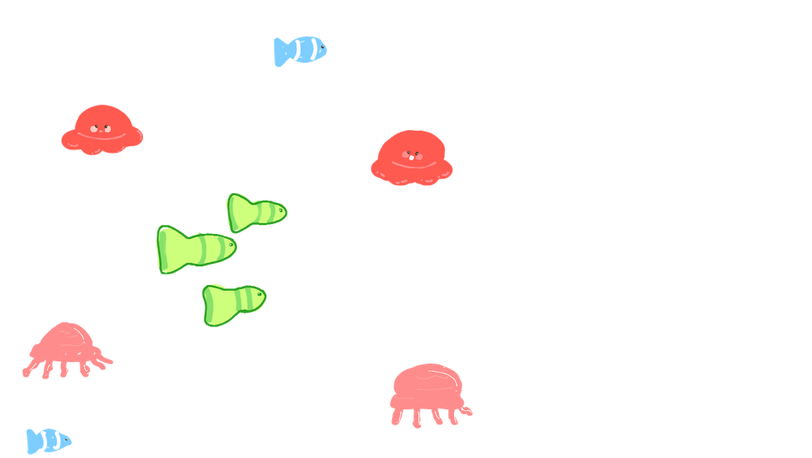
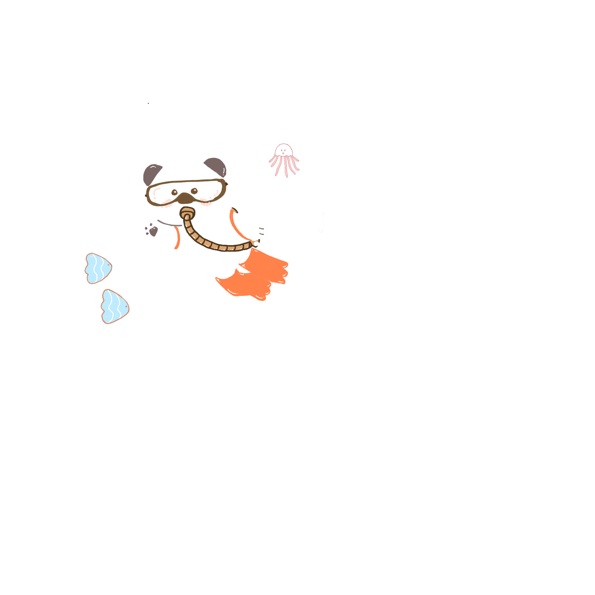
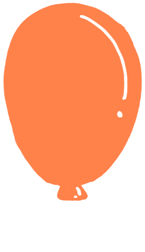
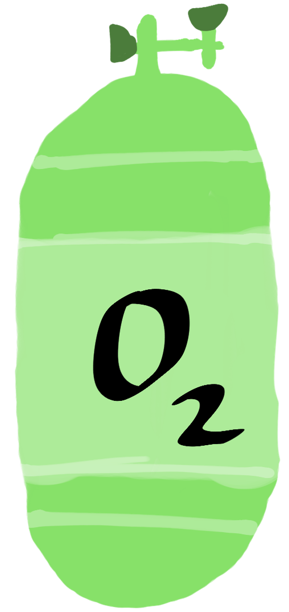

Stop 1: Descent
A balloon filled with 1 L of air at the surface goes down with the diver. Pressure rises by about 1 atm for every 10 m, and the balloon shrinks to match. This is Boyle’s law: at constant temperature, P₁V₁ = P₂V₂. Give the depth bar pinned to the top of your screen a tug to send our diver down, then bring them back up, and watch the balloon squish and spring back.


Pressure times volume stays the same at every depth. That constant is Boyle’s law.
Stop 2: The mix
Each gas in the tank adds its own pressure. Dalton’s law says the total is the sum of the partial pressures, and each partial pressure is the mole fraction times the total. The orange marks show commonly cited limits. Dive with the depth bar at the top of your screen to crank the total pressure up or down, then choose a breathing gas below to see how the partial pressures respond.
Stop 3: Ascent
The diver exhales a 1 L bubble at 30 m. Slide up and it expands as pressure falls. Turn on water temperature and the bubble also warms, so you need the combined gas law, P₁V₁/T₁ = P₂V₂/T₂. Swim the depth bar at the top of your screen back toward 0 m and watch the bubble bob up and puff out. You can also toggle the water temperature to switch between Boyle’s law and the combined gas law.
Stop 4: The tank
A full tank holds gas at around 200 atm, where the ideal gas law starts to fail. Compare it with a van der Waals model. Z = PV/nRT equals 1 for an ideal gas. Play with the pressure and temperature sliders beside the tank to change what’s going on inside it, and watch the ideal and real gas volumes and the graph react. This stop is on its own: the depth bar at the top won’t change a thing here.
